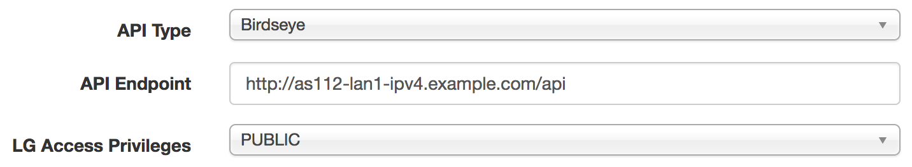

Looking Glass
IXP Manager supports full looking glass features when using the Bird BGP daemon and Bird's Eye (a simple secure micro service for querying Bird).
A fully working example of this can be seen here on INEX's IXP Manager.
Enabling the looking glass just requires:
- properly configured router(s).
- for routers that Bird and where you want them to be available via a looking glass, install Bird's Eye on the same server(s) running Bird.
- the API endpoint must be accessible from the server running IXP Manager and this endpoint must be set correctly in the router's configuration (see router(s) page) (along with an appropriate setting for LG Access Privileges). Note that the Birdseye API end points do not need to be publicly accessible - just from the IXP Manager server.
- set the
.envoption:IXP_FE_FRONTEND_DISABLED_LOOKING_GLASS=false(in IXP Manager's.envand add it if it's missing as it defaults totrue).
Choose the Correct Version of Bird's Eye to Use
- For IXP Manager v4.x.y, choose the latest version of Bird's Eye v1.1.x.
- For IXP Manager v5.x.y, choose the latest version of Bird's Eye v1.2.x.
The looking glass will not work if the versions are not matched correctly as above.
Example Router Configuration
See this screenshot for an appropriately configured INEX router with Bird's Eye:

Looking Glass 'Pass Thru' API Calls
Depending on the configured LG Access Privileges for a given router, IXP Manager will pass thru the following API calls to the router API.
https://ixp.example.com/api/v4/lg/{handle}/statushttps://ixp.example.com/api/v4/lg/{handle}/bgp-summary
and return the JSON result.
The rationale for this is that we expect most IX's to keep direct access to looking glass implementations on internal / private networks.
Here are two live examples from INEX:
- https://www.inex.ie/ixp/api/v4/lg/rc1-cork-ipv4/status
- https://www.inex.ie/ixp/api/v4/lg/rc1-cork-ipv4/bgp-summary
You can see all of INEX's looking glasses at https://www.inex.ie/ixp/lg. GRNET have also a public IXP Manager integration at: https://portal.gr-ix.gr/lg.
Debugging
Generally speaking, if you carefully read the above and the Bird's Eye README file, you should be able to get IXP Manager / Bird's Eye integration working.
If you do not, try all of the following and solve any elements that fail. If you still have issues, email the IXP Manager mailing list with the output of all of the following commands from both sections.
For the following examples, we will use a real INEX example router with these settings:
mysql> SELECT * FROM routers WHERE id = 17\G
*************************** 1. row ***************************
id: 17
vlan_id: 2
handle: as112-lan1-ipv4
protocol: 4
type: 3
name: INEX LAN1 - AS112 - IPv4
shortname: AS112 - LAN1 - IPv4
router_id: 185.6.36.6
peering_ip: 185.6.36.6
asn: 112
software: 1
mgmt_host: 10.39.5.6
api: http://as112-lan1-ipv4.mgmt.inex.ie/api
api_type: 1
lg_access: 0
quarantine: 0
bgp_lc: 0
template: api/v4/router/as112/bird/standard
skip_md5: 1
last_updated: 2018-02-03 14:26:15
From the server running IXP Manager:
###############################################################################
# Does the API hostname resolve?
$ dig +short as112-lan1-ipv4.mgmt.inex.ie
10.39.5.6
###############################################################################
# Is there network access?
$ ping as112-lan1-ipv4.mgmt.inex.ie -c 1
PING as112.mgmt.inex.ie (10.39.5.6) 56(84) bytes of data.
64 bytes from as112.mgmt.inex.ie (10.39.5.6): icmp_seq=1 ttl=64 time=0.103 ms
--- as112.mgmt.inex.ie ping statistics ---
1 packets transmitted, 1 received, 0% packet loss, time 0ms
rtt min/avg/max/mdev = 0.103/0.103/0.103/0.000 ms
###############################################################################
# Is the Bird's Eye service available?
$ curl -v http://as112-lan1-ipv4.mgmt.inex.ie/api/status
* Trying 10.39.5.6...
* Connected to as112-lan1-ipv4.mgmt.inex.ie (10.39.5.6) port 80 (#0)
> GET /api/status HTTP/1.1
> Host: as112-lan1-ipv4.mgmt.inex.ie
> User-Agent: curl/7.47.0
> Accept: */*
>
< HTTP/1.1 200 OK
< Cache-Control: no-cache
< Content-Type: application/json
< Date: Mon, 12 Feb 2018 16:29:52 GMT
< Transfer-Encoding: chunked
< Server: lighttpd/1.4.35
<
* Connection #0 to host as112-lan1-ipv4.mgmt.inex.ie left intact
{
"api": {
"from_cache":true,
"ttl_mins":1,
"version":"1.1.0",
"max_routes":1000
},
"status": {
"version":"1.6.3",
"router_id":"185.6.36.6",
"server_time":"2018-02-12T16:29:48+00:00",
"last_reboot":"2017-11-09T00:23:24+00:00",
"last_reconfig":"2018-02-12T16:26:14+00:00",
"message":"Daemon is up and running"
}
}
If all of the above checks out, watch the log file while you try and access the looking glass:
cd $IXPROOT
tail -f storage/log/laravel.log
If there are error messages in the above log as you try and access the looking glass, include them when emailing the mailing list for help.
Then on the router (the server running Bird's Eye), you need to provide the following answers when seeking help:
###############################################################################
# Are you running the correct version of Bird's Eye for IXP Manager?
cat /srv/birdseye/version.php
# see the documentation above for the correct versions to match to IXP Manager.
###############################################################################
# Is Bird actually running and what are the names of its sockets:
$ ls -la /var/run/bird
total 0
drwxrwxr-x 2 bird bird 120 Nov 9 00:26 .
drwxr-xr-x 25 root root 900 Feb 12 19:40 ..
srw-rw---- 1 root root 0 Nov 9 00:23 bird-as112-lan1-ipv4.ctl
srw-rw---- 1 root root 0 Nov 9 00:23 bird-as112-lan1-ipv6.ctl
srw-rw---- 1 root root 0 Nov 9 00:23 bird-as112-lan2-ipv4.ctl
srw-rw---- 1 root root 0 Nov 9 00:23 bird-as112-lan2-ipv6.ctl
###############################################################################
# What configuration file(s) exist:
$ ls -la /srv/birdseye/*env
-rw-r--r-- 1 root root 2833 Dec 5 2016 /srv/birdseye/birdseye-as112-lan1-ipv4.env
-rw-r--r-- 1 root root 2833 Dec 5 2016 /srv/birdseye/birdseye-as112-lan1-ipv6.env
-rw-r--r-- 1 root root 2833 Dec 5 2016 /srv/birdseye/birdseye-as112-lan2-ipv4.env
-rw-r--r-- 1 root root 2833 Dec 5 2016 /srv/birdseye/birdseye-as112-lan2-ipv6.env
###############################################################################
# Let's see the contents of these:
#
# NB: when specifying the BIRDC parameter below, for Bird v1.x.y, use the -4/-6
# switch when querying the ipv4/6 daemon respectively. For Bird v2.x.y, use
# the -2 switch.
#
$ cat /srv/birdseye/*env | egrep -v '(^#)|(^\s*$)'
BIRDC="/usr/bin/sudo /srv/birdseye/bin/birdc -4 -s /var/run/bird/bird-as112-lan1-ipv4.ctl"
CACHE_DRIVER=file
LOOKING_GLASS_ENABLED=true
BIRDC="/usr/bin/sudo /srv/birdseye/bin/birdc -6 -s /var/run/bird/bird-as112-lan1-ipv6.ctl"
CACHE_DRIVER=file
LOOKING_GLASS_ENABLED=true
BIRDC="/usr/bin/sudo /srv/birdseye/bin/birdc -4 -s /var/run/bird/bird-as112-lan2-ipv4.ctl"
CACHE_DRIVER=file
LOOKING_GLASS_ENABLED=true
BIRDC="/usr/bin/sudo /srv/birdseye/bin/birdc -6 -s /var/run/bird/bird-as112-lan2-ipv6.ctl"
CACHE_DRIVER=file
LOOKING_GLASS_ENABLED=true
###############################################################################
# Test birdc access to the daemon - run for each socket found above:
# (only one shown here for brevity - include all in your request for help!)
$ /usr/sbin/birdc -s /var/run/bird/bird-as112-lan1-ipv4.ctl show status
BIRD 1.6.3 ready.
BIRD 1.6.3
Router ID is 185.6.36.6
Current server time is 2018-02-12 19:42:42
Last reboot on 2017-11-09 00:23:25
Last reconfiguration on 2018-02-12 19:26:15
Daemon is up and running
###############################################################################
# Have you created the sudo file for www-data to be able to access Birdc?
$ cat /etc/sudoers /etc/sudoers.d/* | grep birdseye
www-data ALL=(ALL) NOPASSWD: /srv/birdseye/bin/birdc
###############################################################################
# Does the Bird's Eye client work?
# Run for each socket found above with the appropriate protocol (-4/-6):
# (only one shown here for brevity - include all in your request for help!)
$ /srv/birdseye/bin/birdc -4 -s /var/run/bird/bird-as112-lan1-ipv4.ctl show status
BIRD 1.6.3 ready.
Access restricted
BIRD 1.6.3
Router ID is 185.6.36.6
Current server time is 2018-02-12 19:44:31
Last reboot on 2017-11-09 00:23:25
Last reconfiguration on 2018-02-12 19:26:15
Daemon is up and running
###############################################################################
# Is the web server running:
$ netstat -lpn | grep lighttpd
tcp 0 0 10.39.5.6:80 0.0.0.0:* LISTEN 1165/lighttpd
tcp6 0 0 2001:7f8:18:5::6:80 :::* LISTEN 1165/lighttpd
unix 2 [ ACC ] STREAM LISTENING 13970 635/php-cgi /var/run/lighttpd/php.socket-0
###############################################################################
# Is PHP running:
$ netstat -lpn | grep php
unix 2 [ ACC ] STREAM LISTENING 13970 635/php-cgi /var/run/lighttpd/php.socket-0
###############################################################################
# what's the web server configuration
# NB: make sure you have compared it to:
# https://github.com/inex/birdseye/blob/master/data/configs/lighttpd.conf
$ cat /etc/lighttpd/lighttpd.conf
<not included but linked two lines up>
###############################################################################
# provide the IXP Manager configuration of your router(s):
mysql> SELECT * FROM routers\G
<not included - see example at start of this section>